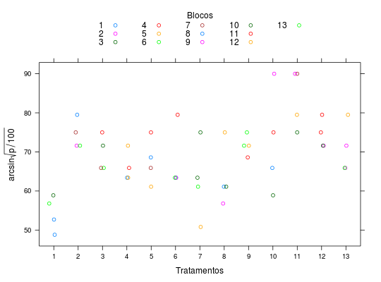

Experimento em blocos incompletos equilibrados do Tipo III com recuperação da informação interblocos, conduzido por Fraga e Costa (1950). Neste experimento temos \(b = v = 13\), \(k = r = 4\), \(\lambda = 1\) e os valores de \(z\) obtidos através de \(z = \arcsin \left (\sqrt \frac{p}{100}\right)\), onde \(p\) é a porcentagem amostral de plantas sadias.
Um data.frame com 52 observações e 3 variáveis, em que
bloctratPIMENTEL-GOMES (2009), Tabela 10.6.1, pág. 198.
Fraga Jr., C. G., Costa, A. S. Análise de um experimento para combate de vira-cabeça do tomateiro. Bragantia, 10: 305--316, 1950.
data(PimentelTb10.6.1)#> Warning: data set ‘PimentelTb10.6.1’ not foundstr(PimentelTb10.6.1)#> 'data.frame': 52 obs. of 3 variables: #> $ bloc: Factor w/ 13 levels "1","2","3","4",..: 1 2 3 4 5 6 7 8 9 10 ... #> $ trat: Factor w/ 13 levels "1","2","3","4",..: 1 2 1 3 4 1 2 1 6 3 ... #> $ z : num 52.7 71.6 58.9 75 71.6 56.8 75 48.8 63.4 71.6 ...library(lattice) xtabs(~trat + bloc, data = PimentelTb10.6.1)#> bloc #> trat 1 2 3 4 5 6 7 8 9 10 11 12 13 #> 1 1 0 1 0 0 1 0 1 0 0 0 0 0 #> 2 1 1 0 0 0 0 1 0 0 0 0 0 1 #> 3 0 0 0 1 0 1 1 0 0 1 0 0 0 #> 4 1 0 0 1 1 0 0 0 0 0 0 1 0 #> 5 0 0 0 0 0 0 1 1 0 0 1 1 0 #> 6 0 0 0 1 0 0 0 1 1 0 0 0 1 #> 7 0 0 1 0 0 0 0 0 0 1 0 1 1 #> 8 0 1 0 0 1 0 0 1 0 1 0 0 0 #> 9 0 0 0 0 1 1 0 0 0 0 1 0 1 #> 10 1 0 0 0 0 0 0 0 1 1 1 0 0 #> 11 0 0 1 0 1 0 1 0 1 0 0 0 0 #> 12 0 1 1 1 0 0 0 0 0 0 1 0 0 #> 13 0 1 0 0 0 1 0 0 1 0 0 1 0xyplot(z ~ trat, groups = bloc, jitter.x = TRUE, auto.key = list(title = "Blocos", cex.title = 1, columns = 5), data = PimentelTb10.6.1, xlab = "Tratamentos", ylab = expression(arcsin * sqrt(p/100)))